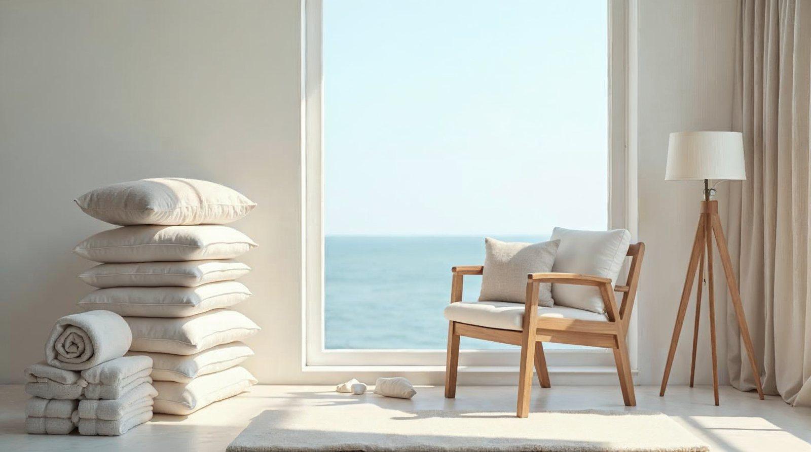
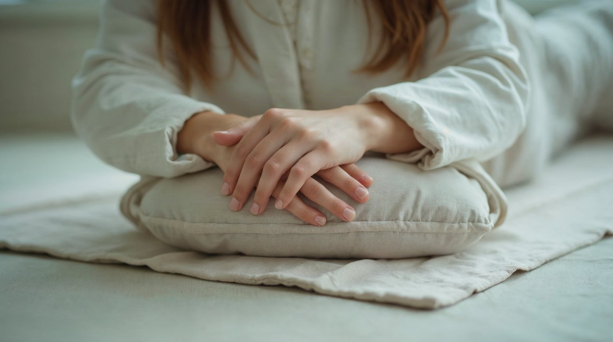
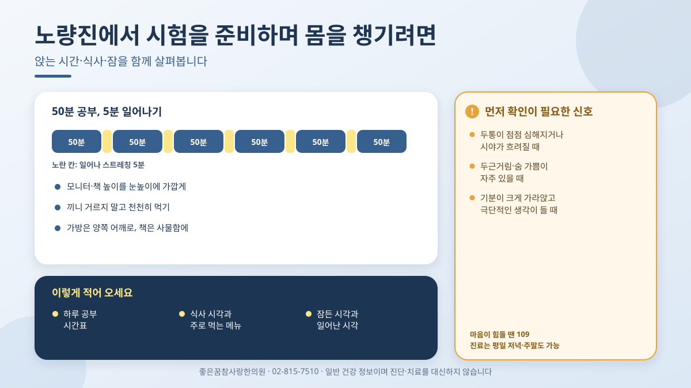

이종호 한의사 감수좋은꿈참사랑한의원 대표원장 (한의사 면허번호 19769)발행 2026-11-23 · 수정 2026-11-26
이 글의 차례
노량진 학원가에서 하루 열 시간 넘게 앉아 공부하는 수험생은 목·어깨 뻐근함, 급하게 먹어 생기는 더부룩함, 불안으로 얕아진 잠이 함께 오는 경우가 많아, 아픈 곳 하나보다 하루 리듬 전체를 함께 살피는 것이 좋습니다. 시험까지 오래 버텨야 하므로 50분 공부 뒤 5분 움직이기처럼 작은 습관부터 시작합니다.
새벽 여섯 시 반, 아직 어둑한 길을 따라 독서실로 향합니다. 편의점에서 산 삼각김밥 하나를 걸으면서 먹고, 다른 손에는 커피를 쥡니다. 자리에 앉아 타이머를 누르는 순간부터 하루는 다시 의자 위에서 흘러갑니다.
점심은 강의 사이 쉬는 시간에 서둘러 해결하고, 저녁은 밤 열 시가 넘어 허기를 달래는 정도로 넘깁니다. 집에 돌아와 누우면 목은 뻐근하고 속은 더부룩한데, 내일 볼 범위가 머릿속을 떠나지 않습니다. 몇 달이 지나면 이 모든 게 원래 그런 것처럼 느껴지지요.
진료실에서 이런 말씀을 자주 듣습니다. 아프다고 쉴 수도 없고, 공부 시간을 빼서 병원에 오는 것도 눈치가 보인다고요. 저는 그 마음을 압니다. 혼자 버티는 시간이 길수록 몸은 가장 뒷순위로 밀리기 쉽습니다.
왜 이런 불편이 생길 수 있나요
고개를 숙이고 오래 필기하면 목 뒤와 어깨 근육이 계속 긴장합니다. 옆에서 보았을 때 귓구멍이 어깨 끝보다 앞에 나와 있다면 머리가 앞으로 나온 자세일 수 있는데, 그러면 목 뒤 근육은 머리 무게를 붙잡느라 하루 종일 쉬지 못합니다.
짧은 쉬는 시간에 급하게 먹거나 끼니를 거르면 속이 더부룩하고 오후에 졸리기 쉽습니다. 끼니를 거른 날은 밤에 한꺼번에 몰아 먹기 쉬워, 속이 무거운 채로 눕게 되기도 합니다.
시험 불안과 늦은 공부가 겹치면 잠드는 시간이 밀리고 깊이 자기 어려워집니다. 잠이 모자라면 같은 뻐근함도 더 크게 느끼는 분이 많고, 긴장이 풀리지 않으면 소화도 무거워집니다.
움직임이 적은 생활은 허리와 다리의 뻐근함, 붓기로 이어지기도 합니다. 저녁이면 양말 자국이 깊게 남는다는 분도 있습니다. 몸은 따로따로 움직이지 않아서, 저는 목만, 속만 떼어 보지 않고 하루를 통째로 봅니다.
수험생의 하루를 다섯 칸으로 나눠 보면
제가 몸을 볼 때 바탕으로 삼는 다섯 가지가 있습니다. 잘 먹고, 잘 싸고, 잘 자고, 마음 편하고, 몸 따뜻하게. 수험생의 하루를 이 다섯 칸에 나눠 보면 어디서부터 손볼지 보이는 경우가 많습니다.
먼저 먹는 칸입니다. 아침은 거르고, 점심은 쉬는 시간에 서둘러 먹고, 저녁은 밤늦게 몰아서 드시나요? 끼니 시간을 날마다 비슷하게 맞추고, 하루 한 끼만이라도 15~20분 앉아서 천천히 드셔 보세요. 빈속 커피는 식사 뒤로 미루는 편이 속에 덜 부담스럽습니다.
다음은 화장실 칸입니다. 강의 중간에 일어나기 어려워 참는 날이 많고, 커피는 마셔도 물은 적게 마시는 분이 생각보다 많습니다. 물을 적게 마시면 변비가 함께 오기도 해서, 물병을 책상 위에 두고 쉬는 시간마다 몇 모금씩 드시라고 권합니다.
잠의 칸은 몇 시간 잤느냐보다 몇 시에 자고 몇 시에 일어났느냐가 먼저입니다. 잠드는 시각을 일정하게 두고, 주말에도 평일보다 한 시간 넘게 늦게 일어나지 않는 편이 리듬을 지키기 쉽습니다. 잠자리에서는 휴대폰을 내려놓으세요.
마음의 칸은 가장 말하기 어려운 칸입니다. 모든 걸 완벽하게 해내려는 마음이 크면 쉬는 시간에도 몸이 긴장을 풀지 못합니다. 하루 계획의 기준을 한 단계만 낮춰 보고, 힘든 마음은 믿을 수 있는 사람에게 말로 꺼내 보세요. 하루 한 가지는 공부와 상관없는 짧은 시간을 두는 것도 좋습니다.
마지막은 온기의 칸입니다. 독서실 에어컨 바람이나 겨울 새벽 찬 공기 속에 오래 있으면 어깨가 움츠러들고 손발이 차지기 쉽습니다. 허리와 아랫배, 발목을 덮는 옷을 챙기고, 찬 음료보다 미지근한 물을 자주 드셔 보세요.
다섯 칸을 한꺼번에 다 채우려 하지 않으셔도 됩니다. 이번 주에는 가장 비어 있는 칸 하나만 골라 보세요.
먼저 이렇게 여쭙니다
- 하루에 몇 시간 정도 앉아서 공부하나요?
- 식사는 제때 드시나요, 주로 무엇을 드시나요?
- 잠은 몇 시에 들고 몇 시간 자나요?
- 목, 어깨, 허리 중 어디가 가장 불편한가요?
- 커피나 에너지 음료를 하루 몇 잔 드시나요?
시험이 언제인지도 꼭 여쭙니다. 시험 날짜에서 거꾸로 세어 봐야 진료 간격과 생활에서 바꿀 것의 순서를 무리 없이 정할 수 있기 때문입니다.
예를 들면 이런 경우입니다
예를 들어 시험 기간에 끼니를 거르다 밤에 몰아서 먹는 수험생이라면, 식사 간격과 빈속 커피 습관을 먼저 함께 정리합니다. 저녁 강의 전에 작은 끼니를 하나 넣어 두고, 밤늦게 몰아 먹던 양을 그만큼 덜어 내는 순서로 바꿔 보는 식입니다.
예를 들어 모의고사가 다가오면 허리가 아프고 종아리에 쥐가 자주 나는 분이라면, 팔과 종아리 근육의 긴장과 함께 잠자는 시간과 식사 시간을 같이 여쭙습니다. 땀을 흘렸거나 물을 적게 마신 날 쥐가 잘 난다는 분도 있어, 그날 마신 물과 커피의 양도 함께 봅니다.
예를 들어 성적이 나오는 주만 되면 속이 먼저 반응하고 잠이 얕아지는 분이라면, 긴장할 때마다 소화가 멈춘 듯한 느낌이 되풀이되는지, 그날 몇 시에 잠들었는지를 함께 짚어 봅니다. 긴장하면 위장의 움직임이 영향을 받을 수 있어 속과 잠과 마음을 한 줄로 이어서 봅니다.
스스로 점검해 보세요
요즘 하루를 떠올리며 해당하는 것을 세어 보세요.
- 타이머가 울려도 일어나지 않고 두 시간 넘게 앉아 있는 날이 많다
- 하루 한 끼 이상을 거르거나 10분 안에 서둘러 먹는다
- 빈속에 커피나 에너지 음료로 하루를 시작한다
- 물보다 커피를 더 많이 마시고, 화장실을 자주 참는다
- 잠드는 시각이 날마다 한 시간 넘게 들쭉날쭉하다
- 저녁이면 목 뒤가 뻐근하고 다리가 붓는다
- 쉬는 시간에도 공부 걱정이 떠나지 않는다
세 가지가 넘는다면 공부 시간을 줄이기보다 다섯 칸 가운데 하나를 먼저 고쳐 볼 때입니다.
일상에서 먼저 해 볼 수 있는 것
- 50분 공부하고 5분 일어나 스트레칭하기
- 끼니를 거르지 말고 천천히 먹기
- 잠드는 시각을 일정하게 유지하기
- 모니터와 책 높이를 눈높이에 가깝게 맞추기
- 가방은 양쪽 어깨로 메고 필요 없는 책은 사물함에 두기
쉬는 5분은 자리에서 완전히 일어나는 데 쓰세요. 벽에 등을 대고 뒤통수와 어깨가 함께 닿는지 확인하고, 가슴을 펴며 어깨를 뒤로 천천히 돌립니다. 윗니와 아랫니가 붙어 있다면 살짝 떼어 주세요. 문제가 안 풀릴 때 이를 꽉 무는 분이 많습니다.
긴장이 올라올 때는 하루 두세 번, 3분쯤 편하게 앉아 숨을 조금 길게 내쉬어 보세요. 들이쉴 때보다 내쉴 때를 길게 하는 정도면 됩니다. 어지러우면 바로 멈추시고요.
점심을 먹고 나면 바로 자리에 앉기보다 10~15분 건물 밖을 걸어 보세요. 오래 눌려 있던 허리와 다리도 그 시간에 한 번 움직입니다.
책상 높이와 쉬는 순서를 더 꼼꼼히 맞추고 싶다면 수험생 1년 차, 목·어깨 뻐근함이 일상이 됐을 때 책상 자세와 쉬는 법은 어떻게 다시 잡나요?를 함께 읽어 보세요.
허리까지 굳어 일어설 때 한 번에 펴지지 않는다면 노량진에서 하루 종일 앉아 공부하는 수험생의 허리와 목은 어떻게 살피나요?에 앉는 법을 따로 정리해 두었습니다.

목이 굳으면 머리까지 무거워질 때
오후가 되면 목 뒤가 굳고, 저녁 무렵에는 머리까지 조이듯 무겁다는 분이 많습니다. 머리를 감싸는 근육과 목 뒤 근육이 이어져 있어 한쪽이 굳으면 다른 쪽도 함께 당기기 쉽습니다. 문제를 풀며 이를 악무는 습관은 관자놀이 쪽 긴장을 더하기도 합니다.
이럴 때는 손가락 끝으로 두피를 원을 그리듯 1~2분 문질러 보고, 따뜻한 수건으로 목 뒤를 10분쯤 데워 보세요. 한 시간마다 고개를 천천히 좌우로 돌리고 어깨를 툭 내려놓는 것도 함께 해 보시고요.
두통약을 드신다면 그대로 드시되, 먹은 날과 횟수를 적어 두세요. 횟수가 조금씩 늘고 있다면 그 기록이 상담에서 쓸모 있는 단서가 됩니다.
저녁이면 다리가 붓는다면
하루 종일 앉아 있으면 저녁에 종아리가 묵직하고 양말 자국이 깊게 남는 분이 많습니다. 앉아 있는 동안 발목을 돌리고 발끝을 올렸다 내리며 종아리를 자주 움직여 주세요. 꽉 끼는 양말과 바지는 피하고, 짠 국물 같은 짠 음식은 조금 줄여 보시고요.
잠들기 전에는 다리를 조금 높게 두고 쉬어 보세요. 붓기를 빼려고 물을 억지로 줄이는 분도 계신데, 그보다는 짠 음식을 줄이고 자주 움직이는 쪽을 먼저 권합니다.
시험까지 가는 길은 깁니다
수험 생활은 몇 달, 길게는 몇 해를 가는 길입니다. 그 길에서 몸이 보내는 신호는 대개 작게 시작합니다. 오후마다 뒷목이 묵직해지거나, 시험이 다가오면 속이 먼저 불편해지거나, 잠드는 데 걸리는 시간이 조금씩 길어지는 식이지요.
저는 작게 불편할 때 물어보시라고 말씀드립니다. 크게 키워서 오시면 본인이 가장 힘들기 때문입니다. 불편이 작을 때는 생활에서 바꿀 것도 작아서, 공부 흐름을 크게 흔들지 않고도 손볼 수 있습니다.
노량진에서 혼자 지내는 분이라면 밤늦게 불이 켜져 있어도 이제 그만 자라고 말해 줄 사람이 없습니다. 그래서 스스로 정한 마감이 더 필요합니다. 공부를 마치는 시각, 커피를 마지막으로 마시는 시각, 잠자리에 드는 시각 세 가지만 정해 책상 앞에 붙여 두세요.
시험 걱정에 속이 먼저 반응해 변비나 배앓이가 잦다면 시험 스트레스로 변비나 속 쓰림이 올 때는 무엇을 살피나요?도 참고해 보세요.

한의원에서 함께 살필 수 있는 경우
- 오래 앉아 목·어깨가 굳는 경우 자세와 긴장을 함께 살핍니다.
- 시험 스트레스로 잠이 얕은 경우 잠과 긴장을 함께 살핍니다.
- 급하게 먹어 속이 더부룩한 경우 식사 습관과 소화를 함께 살핍니다.
좋은꿈참사랑한의원에서는 하루 시간표와 공부 자세, 식사와 잠을 먼저 듣고, 진맥·설진·복진으로 몸 상태를 살핍니다. 필요하다고 판단될 때 침·추나·한약 상담 등을 정하고, 공부 시간을 크게 빼지 않아도 되도록 다음 진료 간격과 집에서 할 동작을 함께 정합니다.
학원에서 서둘러 오셨다면 잠시 앉아 숨을 고르신 뒤에 맥을 짚습니다. 양손 맥을 짚는 동안에도 이야기는 편하게 이어 가셔도 됩니다. 저는 손목을 짚으면서 끼니와 잠, 화장실, 손발이 찬지를 여쭙고, 맥에서 느낀 것이 말씀과 맞는지 다시 묻기도 합니다.
필요하다고 판단되면 혀를 보고 배를 눌러 봅니다. 혀에서는 설태가 어디에 얼마나 끼었는지, 배에서는 단단하게 뭉친 곳이 있는지 살핍니다. 혀 가운데 설태가 두껍게 보이면 식사 리듬부터 다시 여쭙는데, 이런 소견도 하나만 떼어 보지 않고 맥과 말씀을 함께 놓고 봅니다.
이어서 앉은 모습과 고개를 돌리고 숙이는 움직임, 어깨 둘레의 뭉친 곳을 확인하고, 필요할 때는 초음파로 근육과 힘줄을 함께 봅니다.
진료 간격은 그날 몸 상태와 시험 날짜, 학원 시간표를 함께 놓고 정합니다. 오실 수 있는 요일을 알려 주시면 그 안에서 맞춰 드립니다.
진료실을 나서기 전에는 이번 주에 바꿔 볼 것 한두 가지만 정해 드립니다. 다섯 칸 가운데 어느 칸부터 채울지요. 다시 오시면 그 한 칸이 어땠는지부터 이어서 여쭙습니다.
노량진역에서 오시는 길
좋은꿈참사랑한의원은 서울 동작구 만양로2길 2 신성빌딩 3층·5층에 있습니다. 노량진역(1·9호선) 3번 출구에서 마을버스 동작01을 타고 신동아리버파크에서 내리시면 됩니다. 상도역(7호선)에서는 3번 출구로 나와 약 200m 직진한 뒤 오거리에서 우회전해 약 200m 오시면 됩니다.
처음 오시는 날은 이야기를 듣고 맥을 짚는 시간이 있어 다시 오실 때보다 조금 더 걸릴 수 있습니다. 그날 대기 상황이나 원장별 진료 일정은 방문 전 전화(02-815-7510)로 확인해 주세요.
이렇게 기록해 오시면 상담이 쉬워집니다
하루 공부 시간표 한 장, 식사 시각과 주로 먹는 메뉴, 잠든 시각과 일어난 시각, 가장 불편한 부위와 그 시간대를 사나흘만 적어 오세요. 휴대폰 메모로도 충분합니다.
여기에 시험 날짜와 하루에 마신 커피와 물의 양을 한 줄 더해 주시면, 다섯 칸 가운데 어디가 비어 있는지 훨씬 빨리 보입니다.
이런 증상은 먼저 확인이 필요합니다
- 두통이 점점 심해지거나 시야가 흐려지는 경우
- 스스로를 해칠 생각이 들면 ☎ 109로 바로 연락하세요.
이런 신호가 있으면 한의원보다 가까운 병원이나 응급실을 먼저 찾으세요.
오늘 밤 독서실 불을 끄고 나설 때
몇 달째 같은 의자에서 버텨 온 몸입니다. 뻐근한 목도, 더부룩한 속도 그 몸이 지금 조금 쉬고 싶다고 보내는 말일 수 있습니다. 공부를 멈추라는 뜻이 아니라 하루를 조금 다르게 나눠 보자는 뜻으로 들어 주셨으면 합니다.
오늘 밤 독서실 불을 끄고 나설 때, 다섯 칸 가운데 오늘 가장 비어 있던 칸이 무엇이었는지 하나만 떠올려 보세요. 다음에 오시면 그 칸 이야기부터 여쭙겠습니다.

여쭙는 것
- 하루에 몇 시간 정도 앉아서 공부하나요?
- 식사는 제때 드시나요, 주로 무엇을 드시나요?
- 잠은 몇 시에 들고 몇 시간 자나요?
생활에서 해 볼 것
- 50분 공부하고 5분 일어나 스트레칭하기
- 끼니를 거르지 말고 천천히 먹기
- 잠드는 시각을 일정하게 유지하기
한의원에서 함께 살필 것
- 오래 앉아 목·어깨가 굳는 경우 자세와 긴장을 함께 살핍니다.
- 시험 스트레스로 잠이 얕은 경우 잠과 긴장을 함께 살핍니다.
- 급하게 먹어 속이 더부룩한 경우 식사 습관과 소화를 함께 살핍니다.
먼저 확인이 필요한 신호
- 두통이 점점 심해지거나 시야가 흐려지는 경우
- 스스로를 해칠 생각이 들면 109로 바로 연락하세요.
한눈에 보는 표
| 구분 | 핵심 |
|---|---|
| 여쭙는 것 | 하루에 몇 시간 정도 앉아서 공부하나요? 식사는 제때 드시나요, 주로 무엇을 드시나요? |
| 생활에서 해 볼 것 | 50분 공부하고 5분 일어나 스트레칭하기 끼니를 거르지 말고 천천히 먹기 |
| 한의원에서 함께 살필 것 | 오래 앉아 목·어깨가 굳는 경우 자세와 긴장을 함께 살핍니다. 시험 스트레스로 잠이 얕은 경우 잠과 긴장을 함께 살핍니다. |
| 먼저 확인이 필요한 신호 | 두통이 점점 심해지거나 시야가 흐려지는 경우 스스로를 해칠 생각이 들면 109로 바로 연락하세요. |
자주 묻는 질문
공부 시간을 빼서 진료받기 어려운데 언제 가면 되나요?
평일은 저녁 8시까지(점심 13:00~14:00), 토·일·공휴일은 09:30~15:00(점심시간 없음)에 진료하니 편한 시간에 예약해 주세요.
수험생도 추나를 받을 수 있나요?
진찰 후 필요하다고 판단될 때 상태에 맞게 진행합니다.
시험 전에 컨디션 관리를 미리 시작해도 되나요?
네. 시험 직전보다 몇 주 앞서 잠과 식사 리듬을 잡아 두는 편이 부담이 적어, 일정에 맞춰 함께 계획을 세웁니다.
침을 맞고 나서 졸리지는 않나요?
치료 뒤 나른함을 느끼는 분도 있어, 중요한 시험이나 수업 직전보다는 여유 있는 시간대로 예약하시길 권합니다.
좋은꿈참사랑한의원은 재진 때 지난번 이야기부터 이어서 여쭙니다. 진료시간과 예약은 오시는 길에서 확인하세요.
어디서 상담받을 수 있나요?
좋은꿈참사랑한의원은 서울 동작구 만양로2길 2 신성빌딩 3층·5층(서울 동작구 상도동, 7호선 상도역 3번 출구 근처)에 있습니다. 한의사 3명(이종호 대표원장, 조영기 수석진료원장, 정원영 진료원장)이 진료합니다. 진료시간은 평일 09:30~20:00(점심 13:00~14:00), 토·일·공휴일 09:30~15:00이며, 방문 전 전화로 확인을 권합니다. 예약은 네이버 예약, 카카오톡 상담, 전화 02-815-7510로 받습니다.
이 글은 일반적인 건강 정보이며 개인의 진단이나 치료를 대신하지 않습니다. 증상이 있거나 복용 중인 약이 있다면 진료를 통해 확인하세요. 치료 효과는 개인마다 다를 수 있습니다.
작성 기준: 일반적으로 알려져 있는 건강 정보를 참고해 정리했습니다(대표원장 감수). 증상 기록은 1~2주 동안 하루 1회, 비슷한 시간에 적어 오시면 지난 상태와 비교하기 쉽습니다.